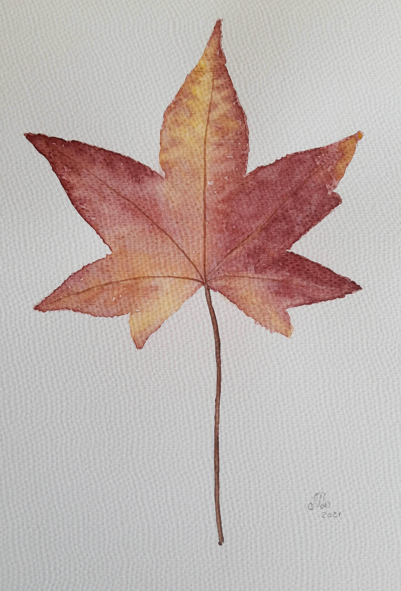
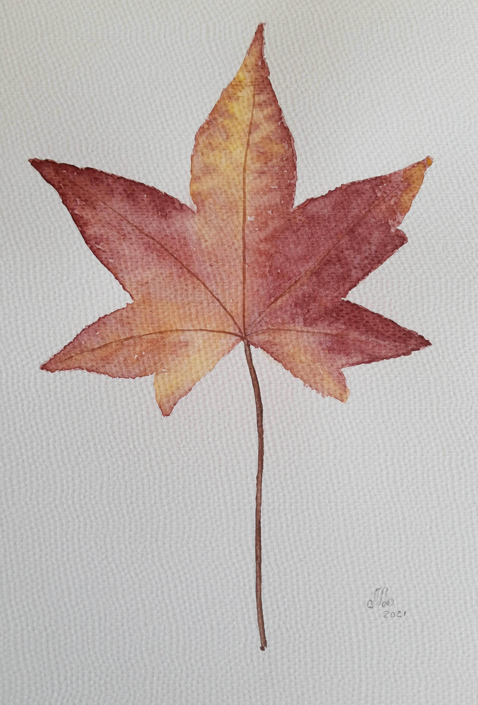

Acuarelas
La acuarela es una técnica difícil pero con una belleza espectacular. Esta técnica requiere de mucha paciencia, para reproducir texturas y formas. Es una técnica pictórica que se realiza sobre papel y utiliza colores que se disuelven al agua.
El agua tiene la capacidad de representarse a sí misma, a la naturaleza que alimenta y a todo aquello que en algún momento y en alguna de sus formas toca y con ello le da la vida.
Hoy, la acuarela es una gran técnica utilizada no sólo por artistas, ilustradores y diseñadores, sino que también es ideal para aficionados con ganas de desarrollar su creatividad, ya sea para relajarse o para explorar nuevas maneras de expresarse.

Aves
El último año me capacité en nuevas y modernas técnicas de las acuarelas. Pintar aves autóctonas de Argentina, mi país, así como de otros rincones del mundo me llena de vida. Los colores vibrantes y las texturas características se pueden expresar con gran delicadeza.
Botánica
Una rama del arte que hasta hace algunos años estaba centrado en la ciencia e investigación de la flora, hoy es cada vez más utilizada para decorar espacios. Desde hojas verdes hasta flores con gran color, se caracteriza por lo minimalista y delicado de las obras.
 
